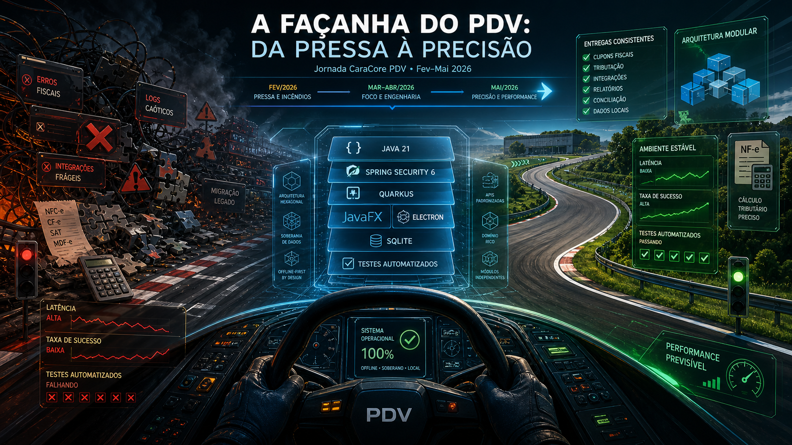

A Façanha do PDV: Da Pressa à Precisão
Por Que Esta História Merece Registro
Toda equipe de software gosta de contar vitórias em formato de release: versão nova, tela nova, funcionalidade nova. Mas raramente a gente documenta o que realmente separa um produto promissor de um produto confiável: os dias em que o foco muda no meio da execução, a stack é reavaliada com o sistema rodando, o desempenho vira assunto de sobrevivência e o teste deixa de ser adereço para virar contrato.
A história do CaraCore PDV no primeiro quadrimestre de 2026 é exatamente isso. Não é uma narrativa de linha reta. É uma travessia com curva, atrito e correção de rota. O objetivo inicial era evoluir rápido para atender a Reforma Tributária e consolidar o desktop brasileiro com Java 21. O que veio junto foi uma sequência real de decisões difíceis: migração de stack, ajuste de segurança, conflitos de execução no Windows, tensão entre velocidade e estabilidade, e uma mudança de mentalidade que hoje define a fase de maio.
Este artigo recompõe essa trajetória pelo histórico de commits e checkpoints técnicos: de fevereiro a maio, da fundação ao refinamento, da pressa à precisão.
Capítulo 1: Fevereiro e o Terreno em Movimento
Em fevereiro, o PDV entra em uma zona de transição estrutural. O histórico mostra uma frente múltipla: reforço de distribuição Electron para Windows, evolução de segurança local, ajustes no SQLite, ampliação de testes e abertura da trilha Quarkus/Qute. Não era só trocar uma biblioteca. Era reposicionar o coração do produto para crescer sem perder o modo offline-first.
Nesse período surgem marcos técnicos que explicam o tamanho da aposta. A migração para Java 21 e Spring Boot 3.x aparece de forma explícita, acompanhada pela atualização para Spring Security 6 e revisão de dependências centrais. Em paralelo, aparecem commits de integração Quarkus e gestão de módulos de domínio (estoque, operador, vendedor), além de reforços na estratégia de build e release.
Essa sobreposição de frentes gera um padrão clássico de engenharia em crescimento: o time quer ampliar capacidade de entrega e, ao mesmo tempo, manter uma operação crítica funcionando para varejo real. É justamente aí que os desafios de performance e robustez começam a sair do rodapé e ocupar o centro da conversa.
Capítulo 2: Abril e o Pico de Complexidade
Se fevereiro foi transição, abril foi teste de resistência. Em poucas semanas, o histórico concentra uma densidade alta de mudanças: segurança, fiscal, UI JavaFX, automação, pipeline, release, modularização, integração desktop/backend e governança de branches.
A migração do código principal para Jakarta e Spring Security 6 aparece como marco explícito. Ao redor dela, cresce um cinturão de validação: testes de API, UI smoke, TestFX, Selenium, cobertura com JaCoCo, ajustes de CI para Windows e uma política prática de gates. O recado da arquitetura fica claro: não basta migrar stack, é preciso provar comportamento.
O segundo eixo crítico foi segurança operacional. O movimento de senha de operador para bcrypt/MCF, a consolidação de autenticação JWT, os ajustes de sessão e os testes de status code (401, 403, 404, 409) mostram que a equipe trocou "segurança por intenção" por "segurança por evidência".
No fiscal, o avanço acompanha o calendário regulatório brasileiro: motor CBS/IBS, simulação tributária, PIX Split e trilhas de auditoria. Mas o detalhe importante não é só o que entrou; é como entrou. Com o tempo, o padrão passa a ser extração de regras puras, validação explícita e integração por serviços de orquestração, reduzindo acoplamento direto.
Mais features + mais migração + mais release + mais testes
= mais chance de regressão se não houver disciplina de fronteira.Capítulo 3: Onde a Performance Virou Tema de Governança
Toda história de software maduro tem um momento em que performance deixa de ser "otimização futura" e passa a ser governança de risco. No PDV, esse momento aparece quando os problemas de execução começam a aparecer em cadeia: conflitos de lock, ruídos de build em Windows, incompatibilidades de runtime, comportamento de testes contaminados por dados e acoplamentos indevidos entre camadas.
A resposta da equipe não foi tentar um "patch mágico". Foi desmontar os gargalos por tipo:
1) Execução e empacotamento: limpeza de processos Electron/Node para evitar lock de artefato, ajuste de diretórios de saída para builds estáveis e revisão de scripts de release.
2) Runtime backend: ajustes de versão em Quarkus/H2, melhorias de compatibilidade com GraalVM e JasperReports, e correções em inicialização/paths para reduzir fragilidade operacional.
3) Banco e testes: redução de colisão de IDs, isolamento melhor de seed em perfil de teste, uso de dados únicos e reforço de transacionalidade para evitar contaminação entre cenários.
4) Resposta HTTP e API: consolidação de helpers de resposta e padronização de códigos, reduzindo ramificações repetidas nos handlers.
O efeito desse pacote é maior do que parece. Quando a equipe resolve o caminho de build, runtime, persistência e contrato de erro ao mesmo tempo, ela reduz o custo de cada próxima entrega. Performance aqui não significa só "mais rápido". Significa "menos imprevisível".
Capítulo 4: A Mudança de Stack Não Foi Troca, Foi Composição
Olhando de fora, alguém pode resumir a fase como "migração para Java 21" ou "adoção de Quarkus". Isso simplifica demais. O que aconteceu na prática foi uma composição de stack orientada por contexto de produto desktop brasileiro.
O PDV consolidou uma base híbrida e pragmática: Java 21 no núcleo, Spring Boot 3.x e Spring Security 6 nas frentes de segurança e serviços já maduros, Quarkus em trilhas de modernização e execução otimizada, JavaFX como camada de operação local, Electron como distribuição e experiência desktop, SQLite como soberania de dados local, e uma malha de testes para validar integração ponta a ponta.
Essa composição permite algo raro: evoluir sem destruir a base instalada. Em vez de apostar em uma ruptura única e arriscada, a equipe preferiu transições guiadas por evidência. Onde a stack nova dava ganho claro, ela avançava. Onde havia risco de regressão operacional, entrava gate de validação.
Do ponto de vista de negócio, essa decisão foi decisiva para um produto que precisa lidar com fiscal, vendas, autenticação e operação local em ambientes heterogêneos de hardware e conectividade.
Capítulo 5: Maio e o Estado da Jornada na Época
Chegamos ao ponto que interessa para decisão executiva: onde estávamos em maio? O histórico do dia 01/05 mostrou um padrão de maturidade crescente. Em vez de uma enxurrada de funcionalidades soltas, apareceu uma sequência de refactors dirigidos por qualidade de domínio.
Duas frentes sintetizam isso com clareza:
Frente fiscal modular: extração de políticas puras de configuração fiscal e sincronização de tabela (validação de alíquota, vigência, NCM, janela de atualização), com serviços de aplicação delegando regra para o domínio e mantendo persistência/orquestração separadas.
Frente de API consistente: consolidação de respostas REST em utilitário comum para padronizar tratamento de erro, reduzir duplicação e melhorar legibilidade/manutenibilidade dos handlers.
Esse movimento veio acompanhado de evidência de gate: crescimento de suíte de testes, validação de integração JavaFX, validação de status codes críticos e continuidade de smoke para cenários sensíveis. Em linguagem simples: o produto não estava só "funcionando"; estava aprendendo a se defender de regressão.
Menos acoplamento, mais política pura, mais teste útil, mais previsibilidade de entrega.O Que Esta Façanha Ensina
A maior lição dessa trajetória não está em um commit específico. Está na mudança de postura técnica ao longo dos meses. O PDV saiu de uma fase de aceleração orientada por necessidade imediata para uma fase de aceleração orientada por engenharia sustentável.
Isso aparece em cinco aprendizados concretos:
1) Migrar stack sem gate é aposta, não estratégia.
2) Performance sem previsibilidade é ilusão de curto prazo.
3) Segurança real nasce de contrato testável, não de intenção declarada.
4) Domínio fiscal exige regra pura e rastreável, não regra espalhada.
5) Produto desktop soberano precisa de disciplina de release tão forte quanto disciplina de código.
No fim, a façanha não foi "fazer tudo de uma vez". Foi atravessar uma janela intensa de mudança e terminar maio melhor organizado do que começou fevereiro.
Amarra: Da Pressa à Precisão
A história do CaraCore PDV em 2026 prova um ponto simples e difícil: equipe madura não é a que evita crise; é a que transforma crise em método. O histórico de GitHub revela exatamente isso. A cada desafio, houve ajuste de foco. A cada pivot de stack, houve reforço de teste. A cada fricção de performance, houve intervenção estrutural.
Hoje, olhando para o que já estava consolidado em maio, o produto está em um lugar mais sólido para seguir rumo ao que realmente importa no varejo brasileiro: estabilidade operacional, conformidade fiscal, segurança de ponta a ponta e evolução contínua sem quebrar a confiança de quem depende do sistema para vender.
Essa é a façanha que vale contar na Sala Retro: não a fantasia de velocidade infinita, mas a construção paciente de um PDV que aguenta o mundo real.
Hashtags
Contato
- E-mail: suporte@caracore.com.br
- Site: www.caracore.com.br
- LinkedIn: Cara Core Informática
Software soberano, arquitetura resiliente e produtos pensados para a realidade brasileira.
Conhecer a Cara Core
Artigo publicado em 15 de agosto de 2026
© 2026 Cara Core Informática. Todos os direitos reservados.